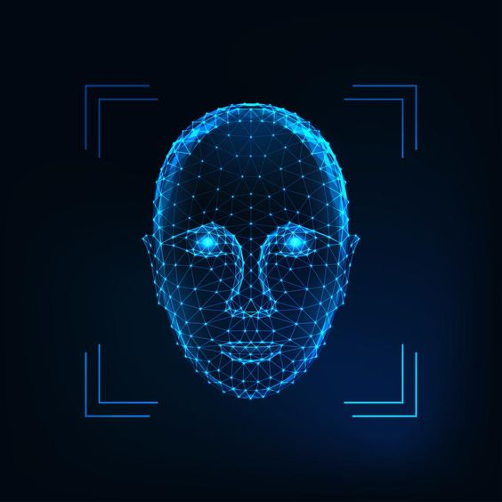
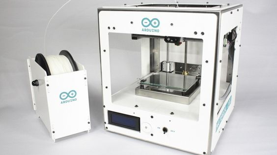
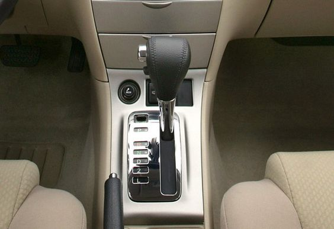
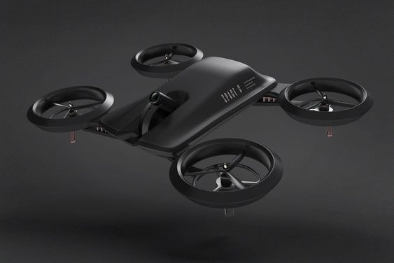
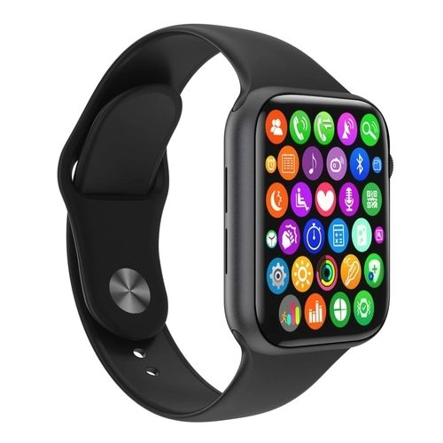

Internet de banda ancha
La banda ancha o acceso a internet de alta velocidad permite a los usuarios acceder a internet y a los servicios relacionados a velocidades significativamente más rápidas que las disponibles mediante los servicios de discado (dial-up, en inglés).
Las criptomonedas
La primera vez que apareció un bitcoin fue el 3 de enero de 2009. En ese entonces, nadie se imagino que “un dinero” basado solo en información cibernética tenía el potencial de poner de rodillas al sistema financiero mundial.
Blockchain
Blockchain se puede definir como una estructura matemática para almacenar datos de una manera que es casi imposible de falsificar. Es un libro electrónico público que se puede compartir abiertamente entre usuarios dispares y que crea un registro inmutable de sus transacciones.
Teléfono inteligente
Cuando Steve Jobs anunció la venta del iPhone en junio de 2007, pocos se imaginaron que en la palma de la mano sus usuarios podrían centralizar toda su vida digital, desde las más íntimas particularidades de la persona, hasta las tareas más complejas del trabajo.
Computación cuántica
Es la que ejecuta sus programas y comandos funcionando como partículas atómicas y subatómicas. Como el hardware y el software interactúan de la misma manera, en teoría, en la que los tejidos humanos se relacionan, sus capacidades de almacenamiento y desempeño prometen ser muy superiores a los de la computación clásica.
Red social de paga
El historiador Yuval Noah Harari, catedrático de la Universidad de Tel Aviv, declaró que quien quiera acceder a información de calidad tendrá que pagar por ella directamente, con preferencia por medio del modelo de las suscripciones. Muchos consumidores le han tomado la palabra al celebrado autor.
La batería de litio
Aunque los smartphones generan la demanda, es la movilidad eléctrica la que ha convertido al litio en el oro blanco, el metal que desafía al petróleo por la supremacía de la industria química.

Sistema de reconocimiento facial.
Utiliza una serie de algoritmos, muchos de ellos, para destacar los millones de rasgos que pueden caracterizar a los rostros humanos. El menú de opciones aplica a diferencias evidentes como el color de los ojos y a minucias imperceptibles a la vista como la distancia entre la nariz y la boca.
YouTube
En la actualidad, la plataforma de 2,000 millones de usuarios cambia la forma de hacer televisión abierta. La colocación de anuncios ha elevado el valor de la página hasta los $ 170,000 millones de dólares.
Inteligencia artificial
La inteligencia artificial automatiza el aprendizaje y descubrimiento repetitivos a través de datos. La inteligencia artificial es diferente de la automatización de robots basada en hardware. En lugar de automatizar tareas manuales, la inteligencia artificial realiza tareas computarizadas frecuentes de alto volumen de manera confiable y sin fatiga.
Corazón artificial
Los impulsos que se generan en la consola externa se transmiten por un sistema de aire y vacío a los ventrículos artificiales que activan el mecanismo de bombeo de la sangre. Esta intervención ha sido posible gracias a la gran experiencia en asistencia circulatoria mecánica de los cirujanos cardiacos, cardiólogos y todo el equipo de profesionales de insuficiencia cardiaca avanzada,

Impresoras 3D
Los objetos que pueden imprimirse en 3D son múltiples y variados. Objetos caseros, maquetas, alimentos, componentes espaciales, prótesis, órganos humanos, etc. Digamos que todo lo que puedas “crear” por ti mismo podría imprimirse en 3 dimensiones. Nada se resiste a las impresoras 3D
Videojuegos de realidad virtual
Este tipo de videojuegos ofrecen una experiencia única en primera persona a los jugadores, convirtiéndolos en los auténticos protagonistas del videojuego para trasladarlos a un mundo sin límites desde el propio sofá de su casa.

Autos de conducción automática
La mayoría de avances en el coche autónomo se deben a un único nombre, Ernst Dickmanns, un alemán que profesor de la Bundeswehr University de Múnich y experto en inteligencia artificial que lideró la construcción del primer coche autónomo moderno.

Computación neuromórfica
La computación neuromórfica pone el foco de atención en algo que nos resulta más familiar, pero que es también muy complejo, nuestro cerebro. La mayoría ya sabemos de forma genérica cómo funciona nuestro móvil con la computación clásica.
Skype
El servicio de mensajería se ha posicionado como el sustituto del clásico MSN Messenger y en uno de los servicios clave dentro de la estrategia de los de Redmond. Seguramente, los creadores de Skype nunca pensaron el peso que iba a tener su servicio; un servicio que nació precisamente el 29 de agosto de 2003.

Los drones
Tienen un gran potencial en áreas muy diversas, ya que puede desplazarse rápidamente sobre un terreno irregular o accidentado y superar cualquier tipo de obstáculo ofreciendo imágenes o capturando otro tipo de datos a vista de pájaro, gracias a los dispositivos que puede transportar (cámaras, sensores…) sin riesgos para las personas.

Relojes Inteligentes
Son a aquellos aparatos electrónicos que de alguna forma se “integran” en una parte del cuerpo, interactuando de forma continua con el usuario: gafas inteligentes, smartwatches, pulseras, zapatillas de deporte con GPS incorporado… la lista cada vez es más extensa.
Internet de las cosas
El Internet de las cosas (IoT) es el proceso que permite conectar elementos físicos cotidianos al Internet: desde objetos domésticos comunes, como las bombillas, hasta recursos para la atención de la salud, como los dispositivos médicos.
El genoma humano
Un genoma es una colección completa de ácido desoxirribonucleico (ADN) de un organismo, o sea un compuesto químico que contiene las instrucciones genéticas necesarias para desarrollar y dirigir las actividades de todo organismo.